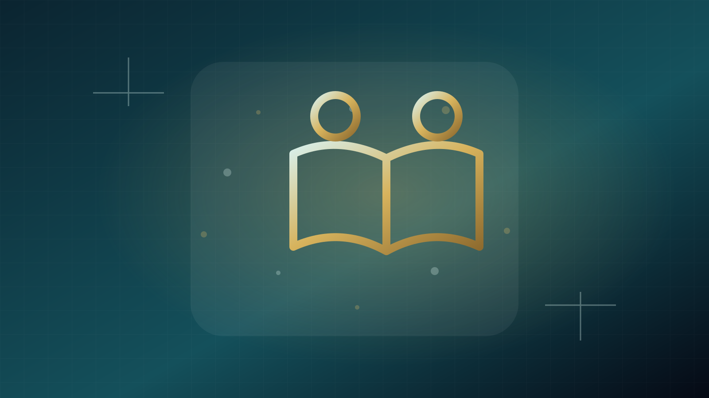

مشاوره سازمانی · مدرسه و مؤسسه
مدارس و مؤسسات آموزشی چه زمانی واقعاً به مشاور آموزشی نیاز دارند؟
هر مسئله مدرسه با یک کارگاه حل نمیشود و هر تغییر نیز به مشاور بیرونی نیاز ندارد. مشاوره زمانی ارزش افزوده دارد که مسئله بین چند بخش پخش شده، قضاوت تخصصی مستقل لازم است یا سازمان برای طراحی و ارزیابی یک تغییر به چارچوب روشن نیاز دارد.

وقتی مسئله سیستم است، نه یک فرد
اگر چند کلاس با مشکل مشابه روبهرو هستند، داده سنجش ناسازگار است یا برنامه توسعه حرفهای اثر قابل مشاهده ندارد، مسئله احتمالاً فراتر از عملکرد یک معلم است و باید در سطح سیستم بررسی شود.
وقتی تصمیم مهم نیاز به نگاه مستقل دارد
انتخاب آزمون، بازطراحی برنامه، تغییر مواد یا راهاندازی نظام استعدادیابی میتواند پیامد گسترده داشته باشد. مرور بیرونی میتواند فرضهای پنهان، تضاد منافع و ریسکهای اجرا را آشکار کند.
کارگاه یا مشاوره؟
اگر مسئله کمبود دانش یا مهارت مشخص در گروه است، کارگاه ممکن است مناسب باشد. اگر مسئله هنوز تشخیص داده نشده یا به فرایند، سیاست و چند ذینفع مربوط است، مشاوره تشخیصی پیش از آموزش منطقیتر است.
پروژه باید مالک داخلی داشته باشد
مشاور نمیتواند تغییر را به تنهایی اجرا کند. فرد یا تیمی در سازمان باید مسئول تصمیم، دسترسی به داده، ارتباط با کارکنان و پیگیری باشد. بدون مالک داخلی، توصیهها احتمالاً روی کاغذ میمانند.
خروجی را پیش از قرارداد تعریف کنید
گزارش تشخیصی، چارچوب سنجش، طرح PD، کارگاه، نقشه اجرا یا بازبینی مواد خروجیهای متفاوتیاند. دامنه، زمان، داده لازم و محدودیتها باید از ابتدا روشن شوند.
منابع
EEF نشان میدهد کیفیت طراحی و مکانیسمهای PD اهمیت دارد؛ OECD نیز توسعه حرفهای را بخشی از ظرفیتسازی در طول مسیر شغلی میبیند.
جمعبندی
مشاوره سازمانی زمانی مفید است که سازمان بتواند سؤال مشخص، داده لازم، مالک تصمیم و خروجی مورد انتظار را تعریف کند. در غیر این صورت، احتمال تولید توصیههای عمومی بالا میرود.